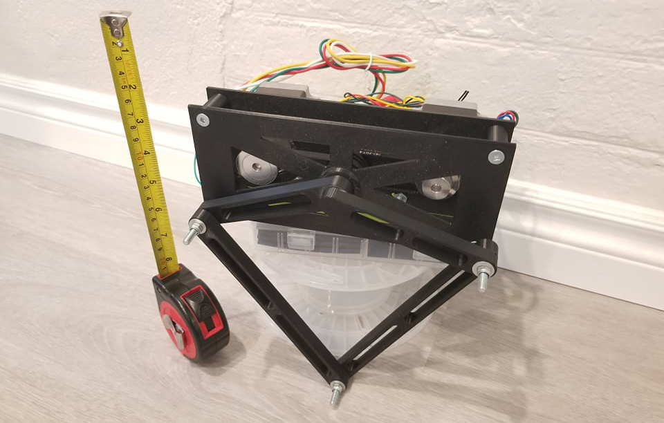
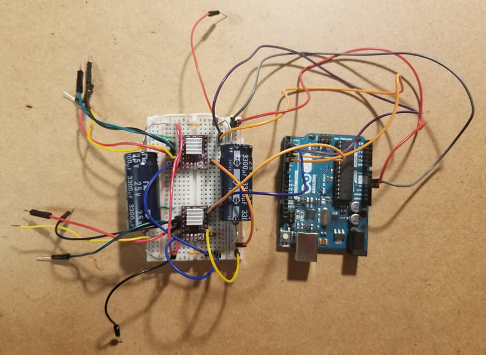

I find quadruped robots super cool and as someone interested in robotics, I saw my grade 12 tech project as a way to learn more about them. Because of Covid-19 and the quadmestered school system, I had a little over a month's time to split between calculus and this project. Because of the tight timeline, certain aspects of the project had to be sacrificed but I still learned a lot.
I took inspiration from the co-axial mechanism used on Stanford's quadrupedal robot Doggo. The leg uses 2 stepper motors to drive the end effector. Ideally, I would have used brushless motors with encoders but due to time and budget constraints I had to use stepper motors. The leg is entirely 3d printed with the exception of basic hardware.
I have experience in both these fields through FIRST Robotics and other side projects so I was least worried about it. I used SolidWorks for CAD and parts were printed on my Prusa I3 Mk3.
The code for Leggo was written in the Arduino IDE using the Arduino C++ variant. The final code for Leggo's walk gait uses angles stored in arrays that were calculated using inverse kinematics and trig. from cartesian coordinates plotted in Desmos.
The electronic portion of this project was pretty simple. I used an Arduino Uno microcontroller along with 2 stepper motor driver boards to control the motors. No encoders were used because I did not have any available at the time.
This was by far the most complicated project I've taken on. Getting all the aspects to work together by myself in a month was tough, but I really enjoyed it. Beyond the technical skills, I picked up during development I learned a lot about project management. Allocating time, using repos, deciding what comes first, presenting progress to others, etc. was all new to me. The CAD & 3D Printing portion of the leg was the easiest portion for me. From FIRST Robotics and other printing projects, my experience made it easy. The electronics portion was a little more difficult but nothing too complex. The hardest part was picking and finding the right components that could ship quickly. Building the circuit was more complicated than others I have done in the past but was still relatively easy to figure out. Writing the firmware though is a whole other story. It was by far the most complicated part of this project. I spent a lot of time trying to think of different ways to create the walk gait. My first thought was that it could be represented by some trig function. After testing I realized that was not the case. Later, after several more tests, I found that it could be represented using 2 functions to form a sort of bean shape. I could then take coordinates from the graph and use inverse kinematics to create angles for the stepper motors to follow. Before this project my experience with writing Arduino firmware was very basic, mainly following examples online and not trying to achieve anything too complex, this was a few steps up. There is no doubt that I learned the most in the firmware portion of this project.
All files for this project can be found in its GitHub repository. Please excuse the poor formatting, my first priority for this project was to get a working walk gait and if I could do it all over again I would put more care into organization.
Link to GitHub page: Leggo Github Repo